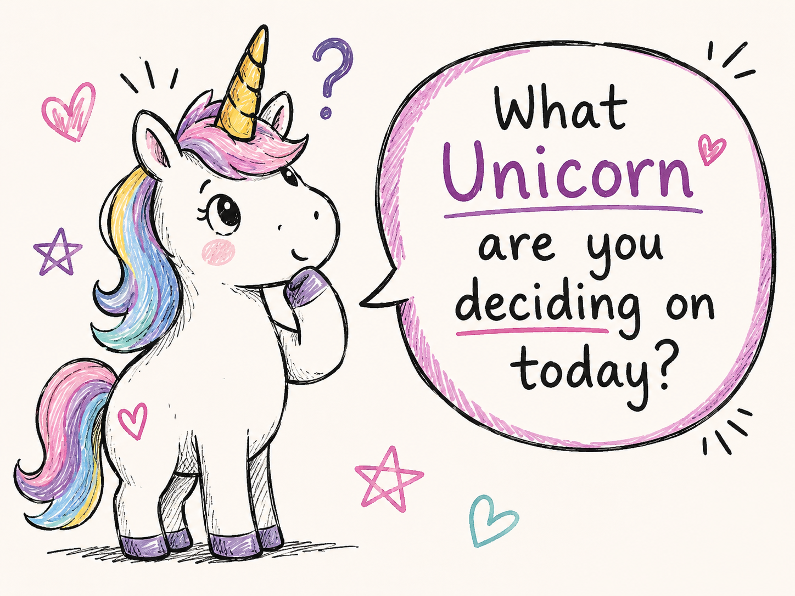

Legendary Unicorn
Things are broadly stable.
Support needs are lower and the focus may be on maintaining progress, building opportunities and keeping things moving in the right direction.
Mostly steady. Still fabulous.
A simple way of understanding where things are right now without turning anybody into a label, number or case file.
Snapshot. Not life sentence.

They're just a way of understanding how much support someone may need at a particular point in time.
They help us spot what is stable, what is wobbling and where something might need attention quickly.
Think sat nav. Not tattoo.

A sat nav needs to know where you are before it can help you work out where you're going.
That doesn't mean you're stuck there forever. It just means we need an honest starting point.
Starting point first. Journey second.
Yes, we could have called them Level 1, Level 2 and Level 3. We chose unicorns instead because life is miserable enough.
Things are broadly stable.
Support needs are lower and the focus may be on maintaining progress, building opportunities and keeping things moving in the right direction.
Mostly steady. Still fabulous.
Some things are working. Some things are decidedly not.
Extra support, planning or stability may be needed in one or more areas.
Wobbly-ish. Workable.
There are significant challenges and more immediate support may be needed.
Red does not mean failure. It just means more support may be useful right now.
Needs backup. Not judgement.
These aren't grades. Nobody wins a trophy for being Green and nobody gets detention for being Red.
The category only tells us how things look right now and what level of support might make sense.
No pass marks. No fail marks. No gold stars.
In fact, we'd expect it to.
Housing changes. Health changes. Relationships change. Work changes. Money changes. Life occasionally throws a chair through the window.
Your category should follow reality. Reality should never be forced to fit your category.
The person changes. The support changes.

What has stabilised? What is working now that wasn't working before?
What needs more support, more time or a different approach?
New problems, new opportunities, new circumstances or new priorities.
No mystery files. No secret codes. No people discussing your life while forgetting to include you.
We'll explain the category, why it currently fits, what it means and what might cause it to change.
Categories should clarify things. Not confuse them.

Green, Amber and Red are tools. They are not identities.
Nobody becomes “a Red veteran” or “an Amber case.”
You're a person whose circumstances currently sit somewhere on a support scale. That's it.
Human first. Category somewhere after that.
It is not permanent. It is not a judgement. It is not a score.
Snapshot. Not life sentence.
How we understand what's going on without turning it into an interrogation.
See how assessment works →Progress is rarely neat. That doesn't mean it isn't progress.
See the journey →See the different routes support can take.
Explore pathways →That's our job to work out with you.